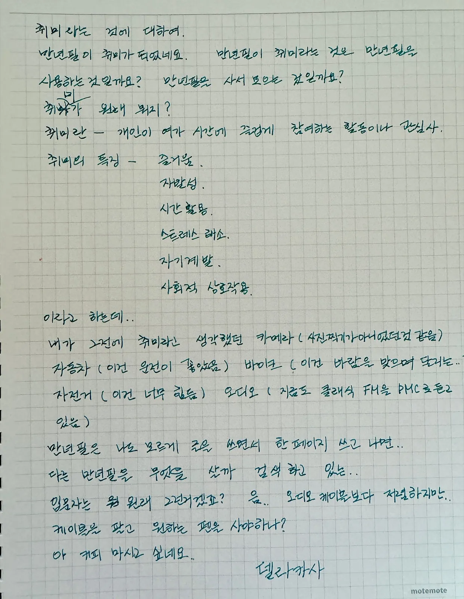
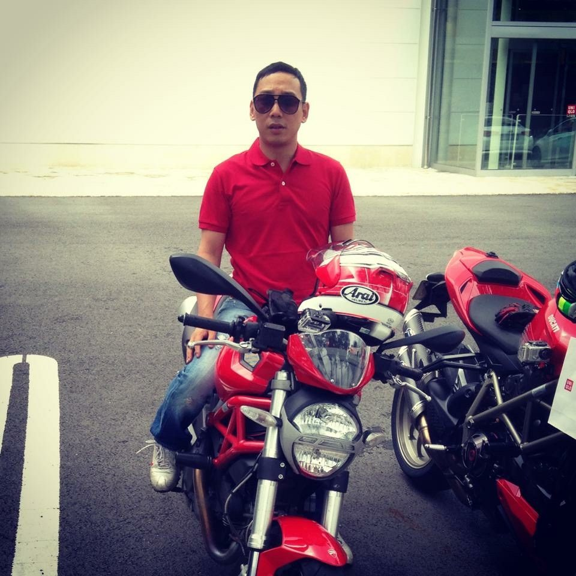
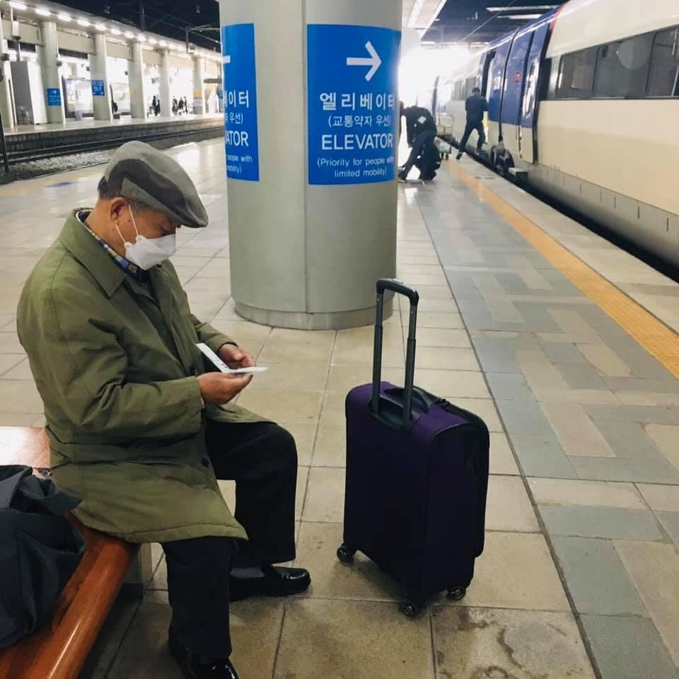
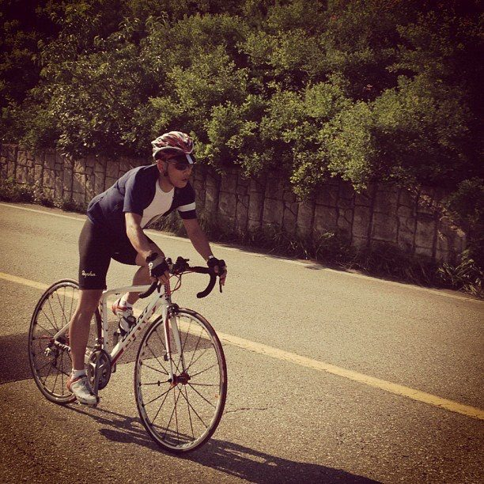
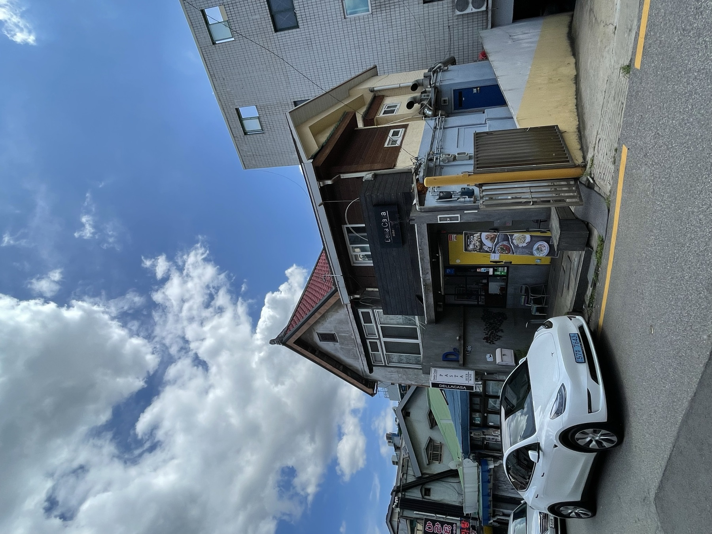
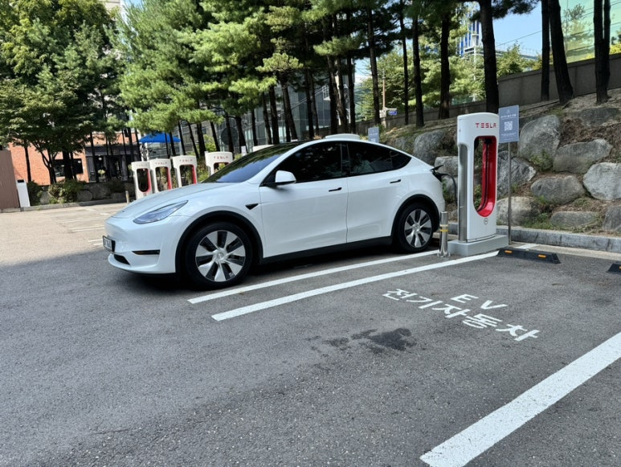
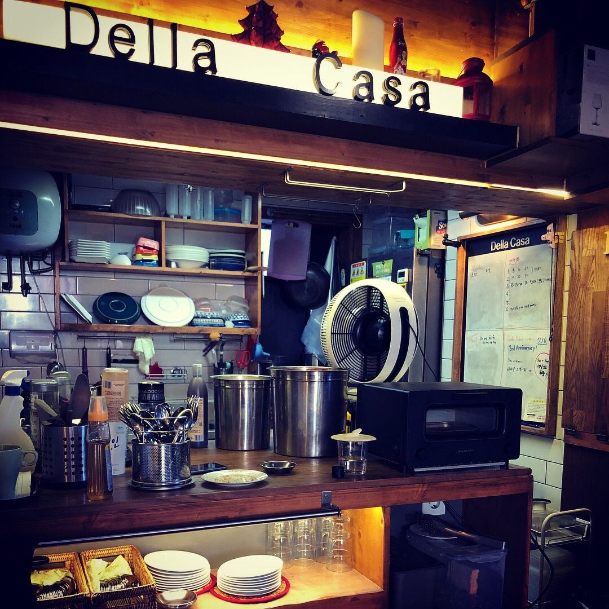
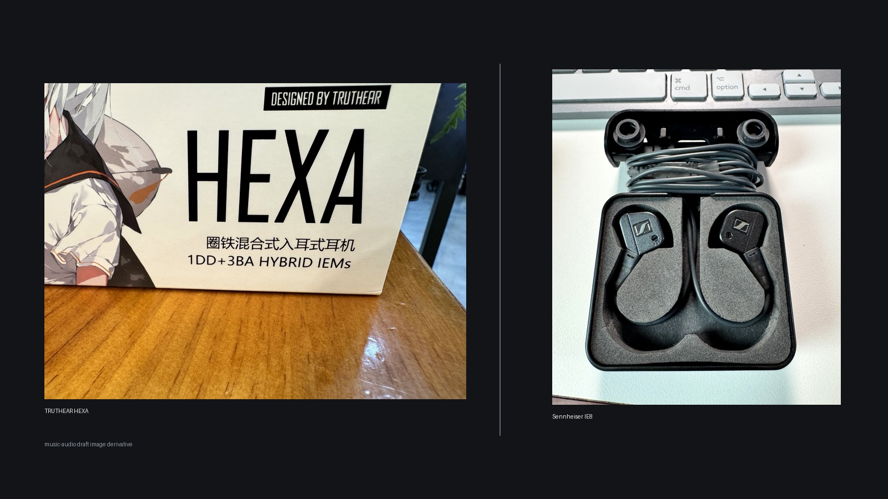
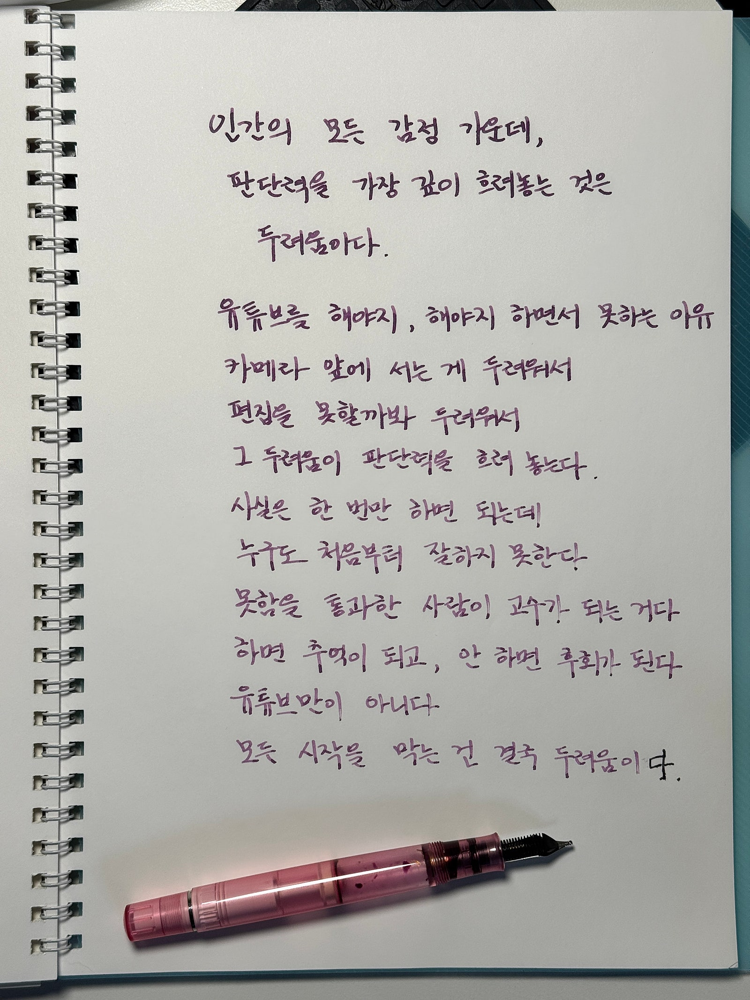

ハムの宇宙 · 九つの星
一本の万年筆、走った道、聴き慣れた音楽。気になる星で、物語に出会ってください。
九つの星の文章と風景
星から届いた物語
ゆっくり読んで、巡ってください。各星に、次の物語が続いています。本文は韓国語です。









何から話せばよいか迷ったら、やってみたいことを言葉にする対話から始めてください。
文章や写真から伝えたい物語を見つけ、読む人に届く形へ一緒に整える仲間です。
考えを映像・ウェブサイト・AIツールの形にする仲間です。これまでの仕事と、一緒につくる方法をご覧ください。